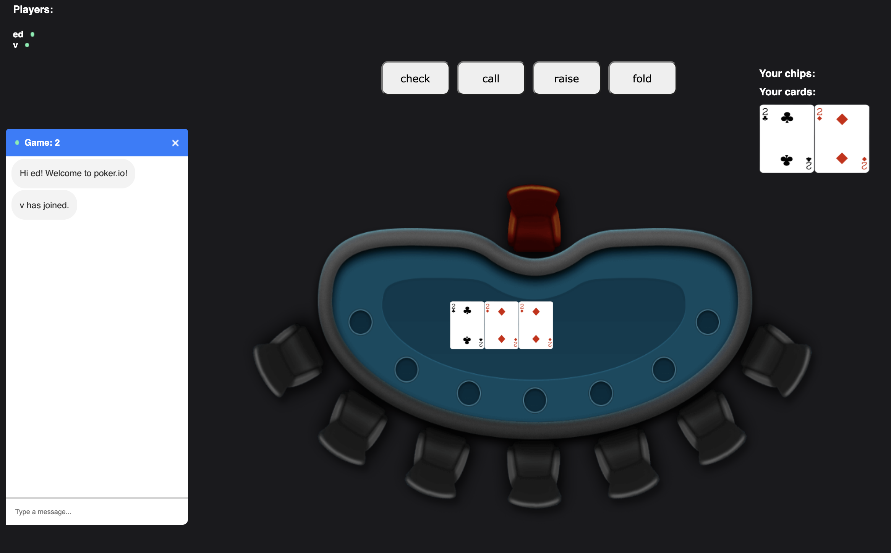
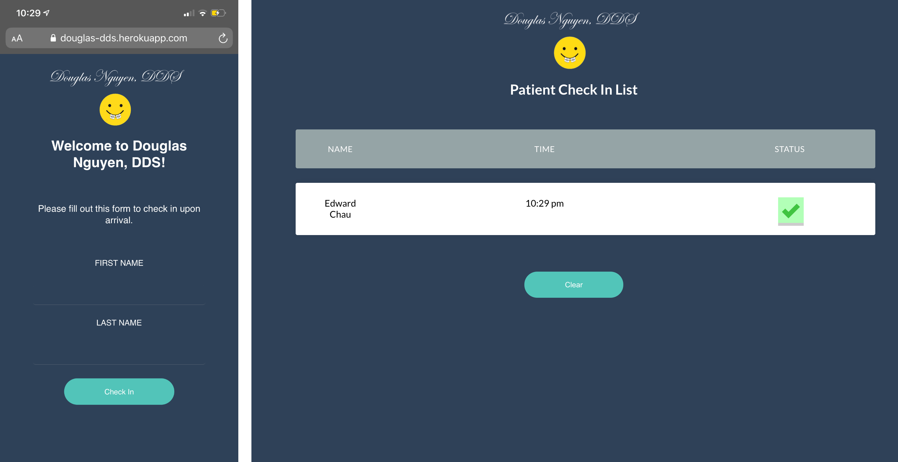
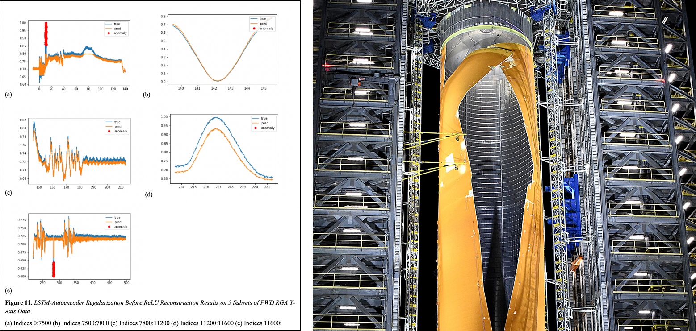
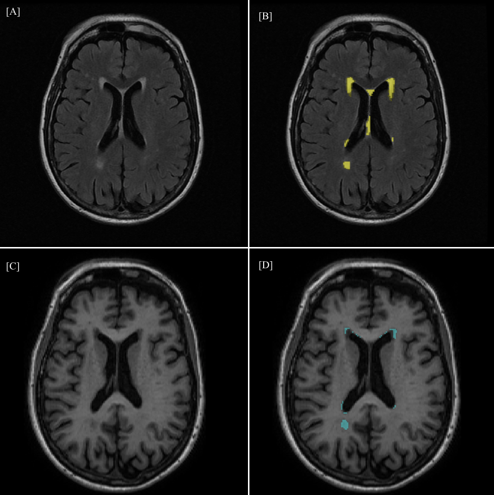
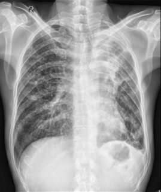

Texas Hold'em
August 2020
This was a web-based poker application I developed using React/Node.js.
There were multiple rooms where simultaneous games could be played along
with a chat feature for each room.
Socket.io was used in order to handle multiple client requests at a time.

Treasure Hunter
June 2020
Treasure Hunter is a turn-based rpg I made
using React/Redux. It was primarily for me to practice using Redux
and was heavily inspired by Pokémon. I partially followed a tutorial from
devmentorlive
but implemented much of it on my own.
Press here to play.

Douglas Nguyen, DDS
May 2020
This web application was made on React/Node.js and allows Dr. Douglas' 1500 monthly patients to
check in online instead of having to call in during COVID19. The administrative side shows
an interactive check list of patients that can be managed by staff.

Anomaly Detection
National Aeronautics and Space Administration
June 2019 - August 2019
During my internship at NASA, I developed an unsupervised Convolutional LSTM-Autoencoder for
fault detection in Rate Gyro Sensor data from Space Launch System simulations. I also helped develop
an API to train and sort results given various types of sensor data from this model.
View Paper.

Leukoaraiosis Severity Assessment
Huntington Medical Research Institutes Neuroimaging Lab
December 2018 - June 2019
Leukoaraiosis is an essential change in white matter with aging, indicating ischemic microvascular disease
which is now understood to be a significant predictor of risk for Alzheimer’s Disease. I developed a U-Net
in Tensorflow that was trained on white matter hyperintensity labels in order to generate a mask of
white matter damage on T2-FLAIR magnetic resonance images. I presented my work at Honors
Transfer Council of California Research Conference and received a research scholar award with $1000 on May
16, 2019.
Read More.

Tuberculosis Diagnosis
August 2018 - April 2019
This was my first large-scale research project. I worked with Dr. Wilkinson from the U.S. Airforce Academy
to develop a Convolutional Neural Network in Tensorflow to diagnose Tuberculosis in chest x-rays. I presented
this at the Southern California Conference for Undergraduate Research and the Honors Transfer Council of California.
I was then noticed by Huntington Medical Research Institutes and invited to lead a project at
their neuroimaging lab.